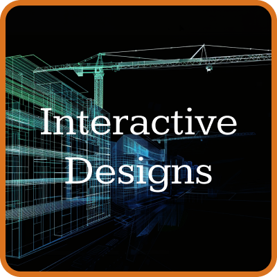

Dallin Hale
Graphic Designer And Developer
Welcome to my website! I'm Dallin Hale, a 29-year-old web developer that transitioned from serving as a police officer
to thriving in the tech industry. I currently specialize in developing interactive maps for a space reservation software company, but I also
design web elements, create feature prototypes, and manage and manipulate our database. I have 4 years experience as a graphic designer, and during
that time I also learned SQL, Python, Javascript, and a bit of Typescript.
Explore my work to see how I can bring creativity and precision to your products.
What I enjoy doing


